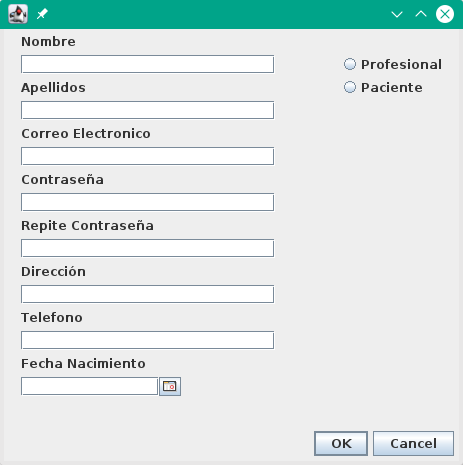
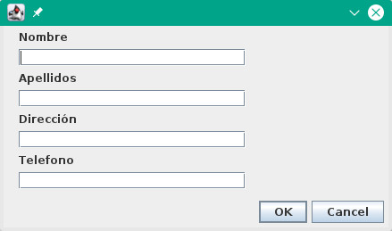

Ayuda de Usuario
Indice de Contenido
Gestión de Cuentas
Pantalla principal para el Profesional Sanitario que accede al sistema. En esta se le muestra su nombre completo y correo electrónico y una lista con los usuarios con acceso al sistema. Tanto pacientes como profesionales. Desde esta Pestaña el profesional puede añadir y eliminar usuarios del sistema, asi como modificar sus datos personales. Desde aqui tambien podrá cambiar su usuario y contraseña de acceso a la aplicación y realizar una copia de la base de datos o restaurar una copia ya guardada.
Modificar Usuario
Botón que abre la ventana de cambio de usuario. El usuario actual es el la direccion de correo electronico usada para acceder al sistema. El nuevo usuario debe ser una nueva direccion de correo electronico. Pulsar OK para aceptar los cambios o cancel para descartarlos

Modificar Contraseña
Botón que abre la ventana de cambio de contraseña. En el primer campo se debe introducir la contraseña actual. En los otros dos campos restantes se introduce la nueva clave a usar. Pulsar OK para aceptar los cambios o cancel para descartarlos

Añadir Usuario
Botón que abre el formulario con los campos a rellenar para un usuario nuevo.
Eliminar Usuario
Elimina el usuario del sistema previamente seleccionado en la lista de usuarios. Muestra un mensaje de confirmación antes de realizar la operación.
Modificar datos
Abre el formulario para la modificación de los datos personales del ususario seleccionado.
Realizar Backup
Abre el una ventana de explorador de archivos para indicar en que carpeta se desea guardar la copia de segurida.
Restaurar
Abre el una ventana de explorador de archivos para seleccionar el archivo de restauracion del sistema
Ayuda para el Sistema de Información de Dieta en Casa